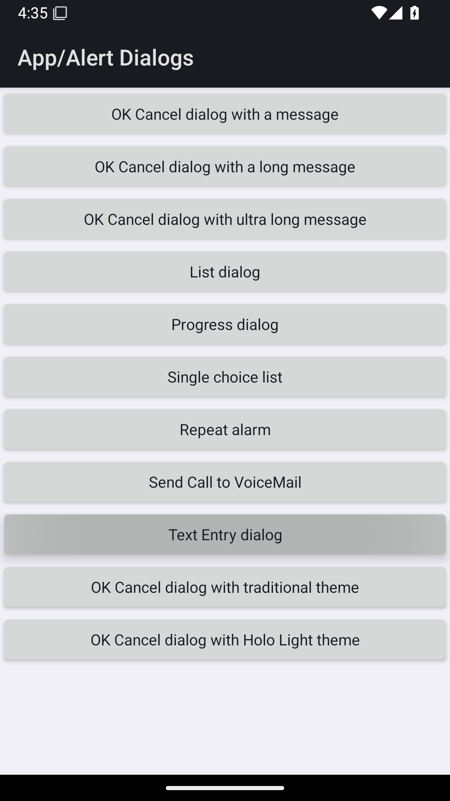

A real automation failure
Android test failure and resolution
The first Android CI run reached the ApiDemos screen, then the text-entry scenario stopped with an invalid CSS selector. The other scenario passed.
BEFORE · CSS INTERPRETATION
#io.appium.android.apis:id/username_editAFTER · NATIVE RESOURCE ID
id=io.appium.android.apis:id/username_editThe explicit native locator fixed the parsing error. The corrected commit passed 2 of 2 scenarios. This was a defect in the test, not a confirmed ApiDemos defect.
What the artifacts established
The screenshot established which screen the test had reached. The error identified the selector strategy. A fresh run of the changed commit established that the correction worked. The initial failed result stays separate from the passing evidence.
Initial failed run · private, sign-in requiredSAVED FAILURE ATTACHMENTFull image


A diagnostic attachment, not a passing result or employer screenshot.